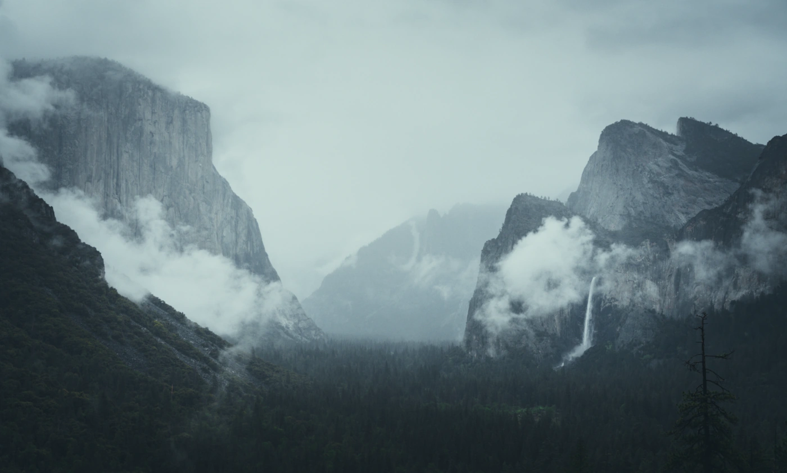
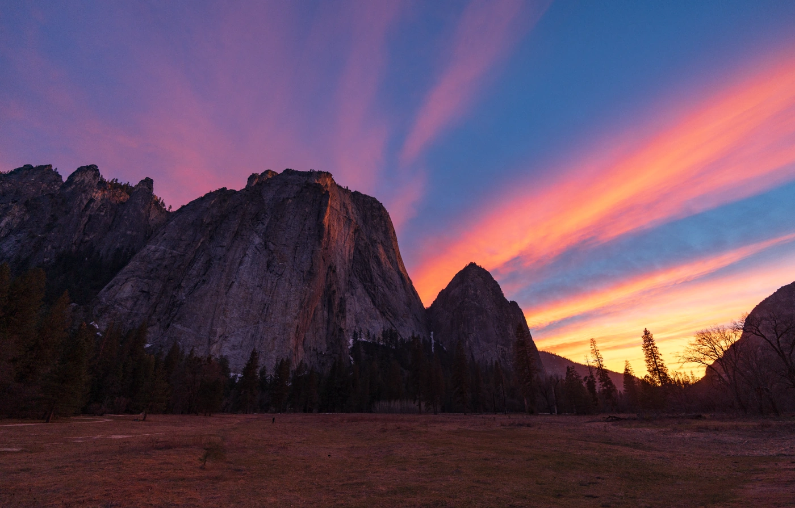
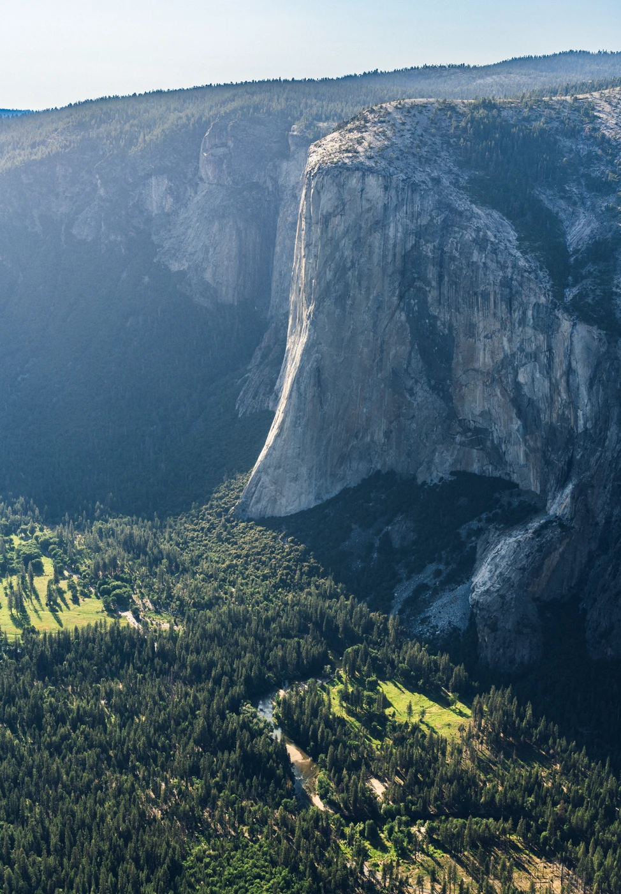
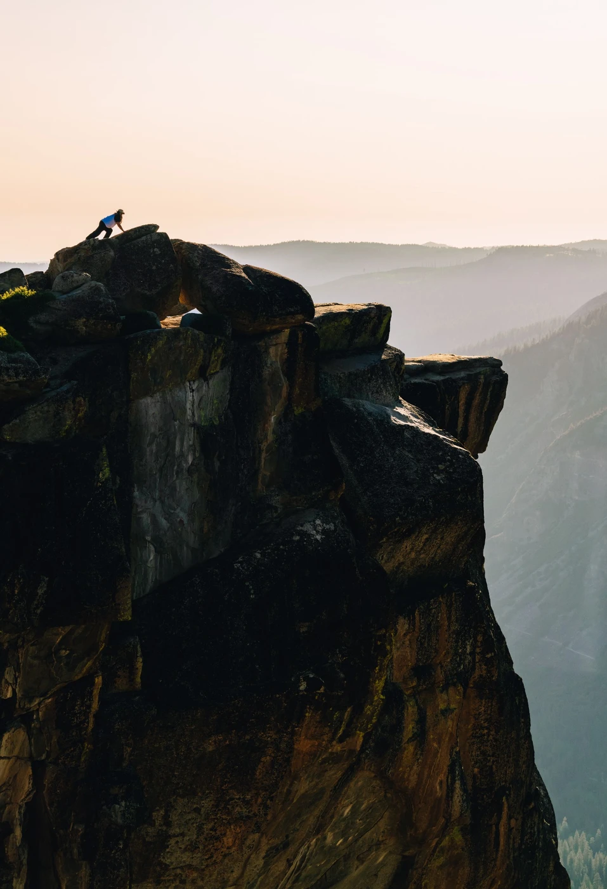
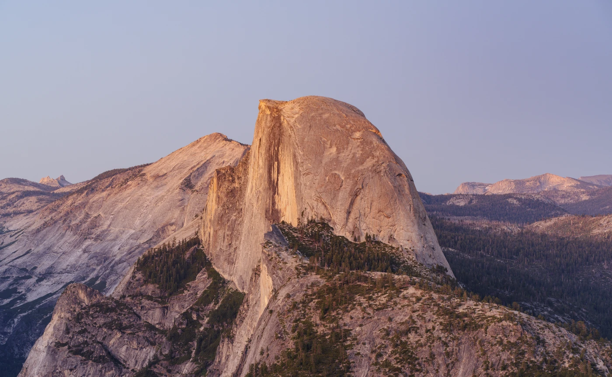
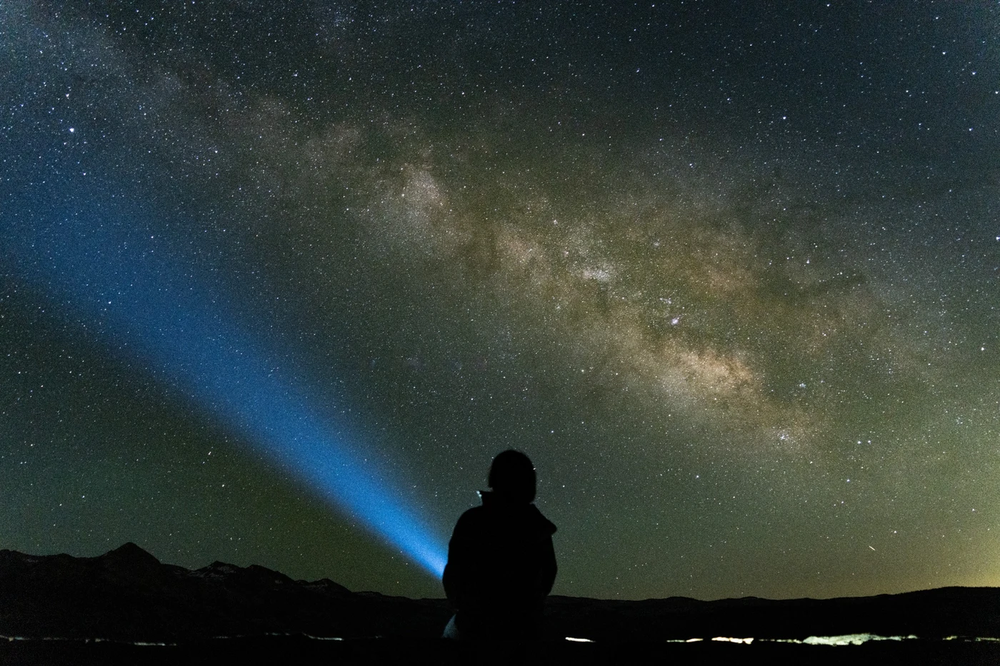
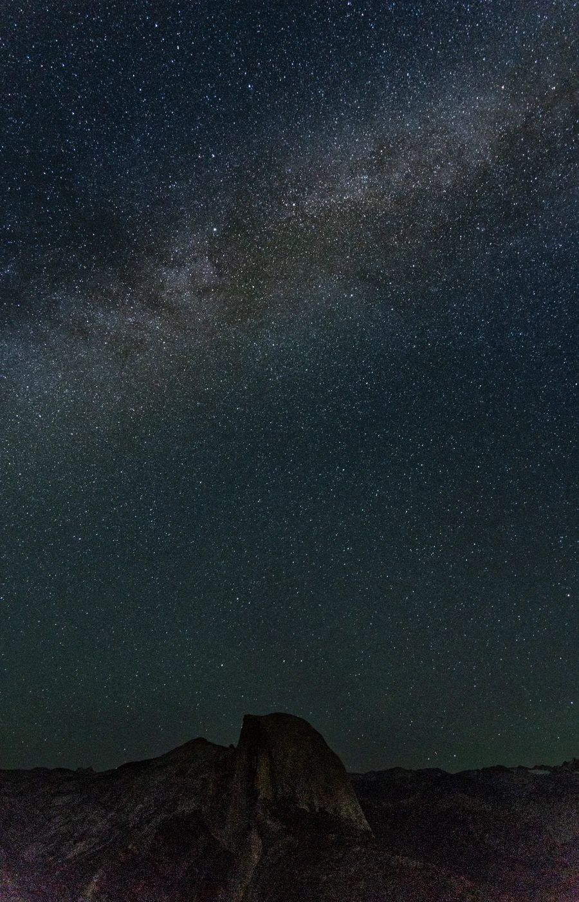
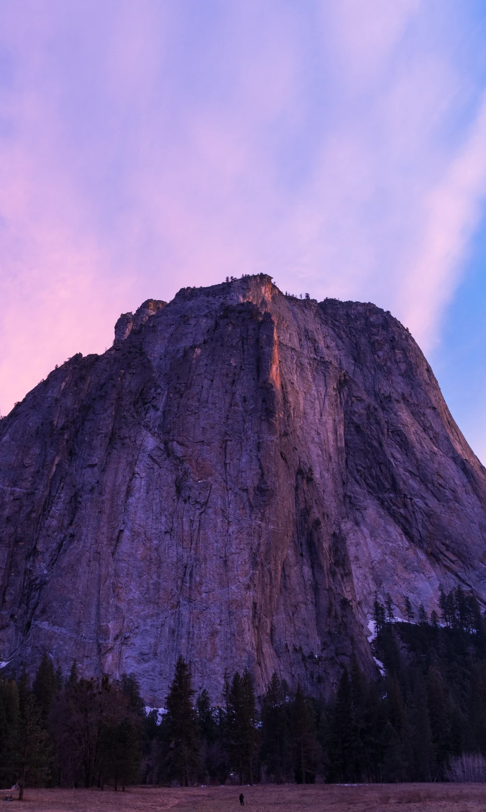
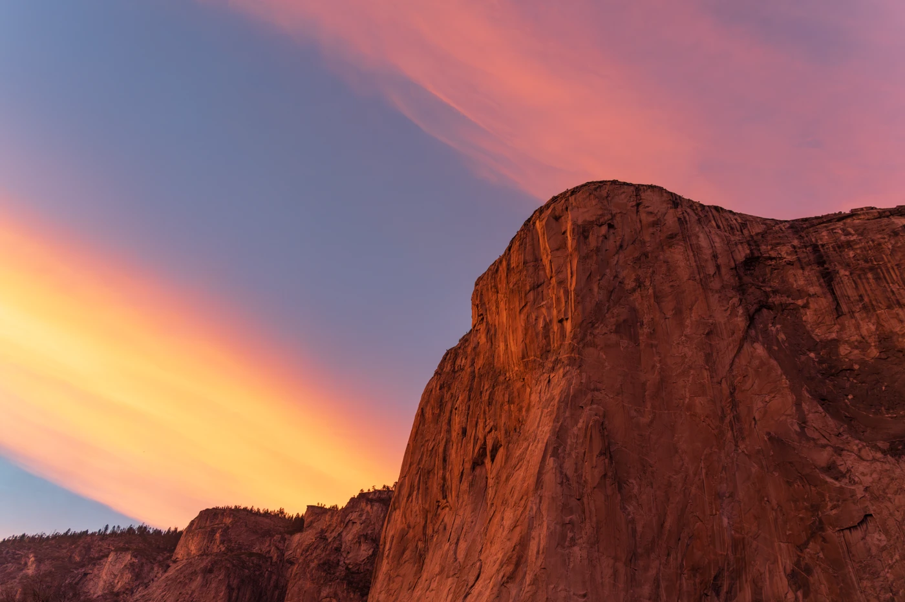

Photography
Yosemite National Park
Land · Yosemite National Park


















Photographs by Jipeng Li.
Get in touch ↗Photography
Land · Yosemite National Park









Photographs by Jipeng Li.
Get in touch ↗